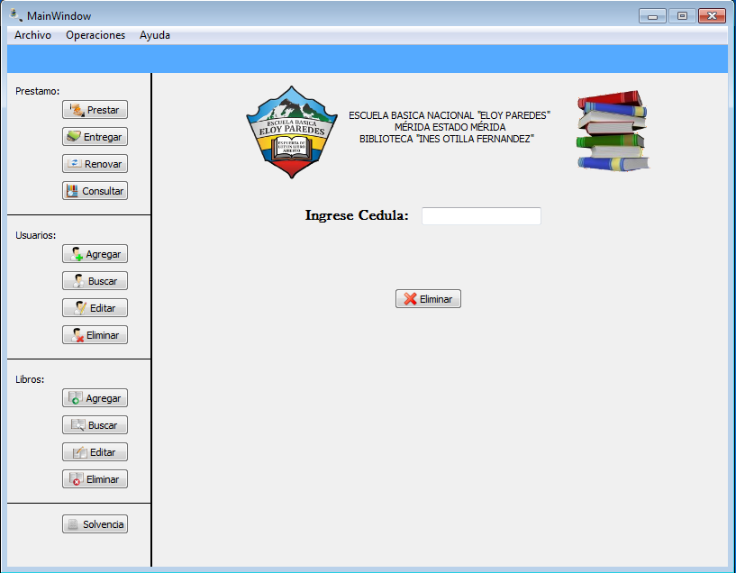

Para realizar la operación de eliminar un usuario existen dos forma de realizar dicha operación:
Figura: Menu Operaciones -> Usuario
Una vez seleccionada la opción de eliminar, debe llenar el formulario que se le muestra en la siguiente figura. El campo que debe de llenar es la cédula del usuario, si el usuario no se encuentra registrado mostrara un error, en caso contrario el usuario será eliminado satifactoriamente.
